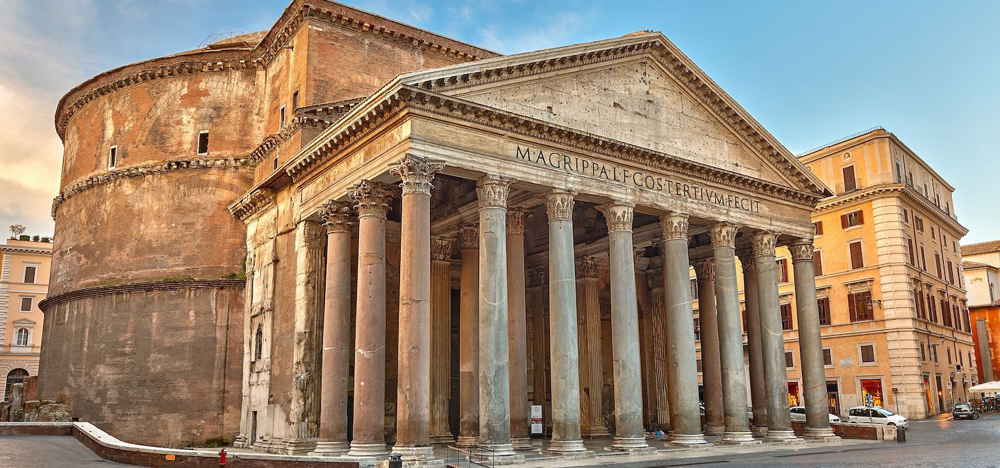
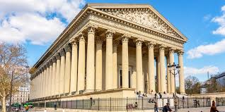
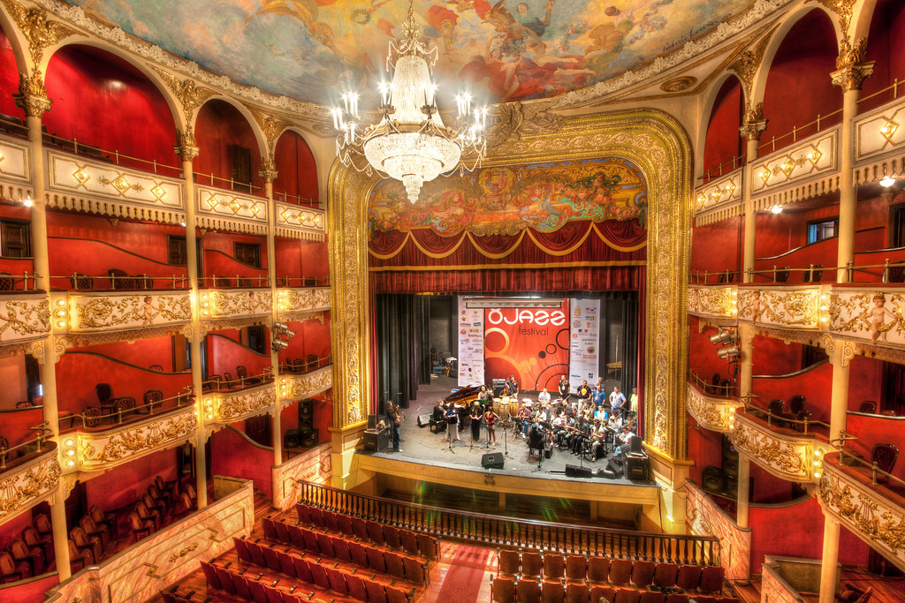
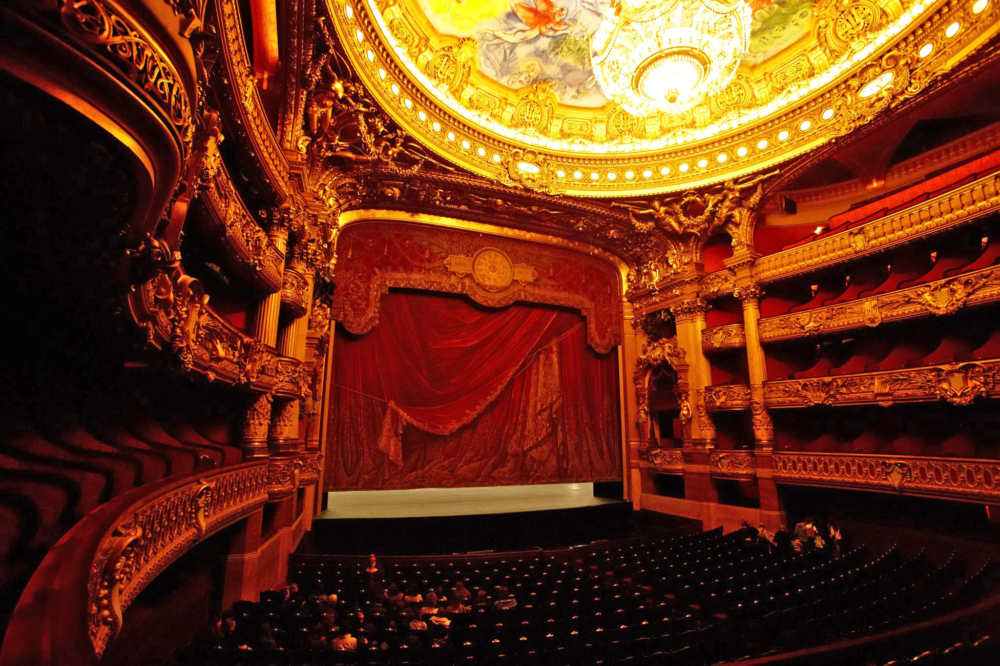
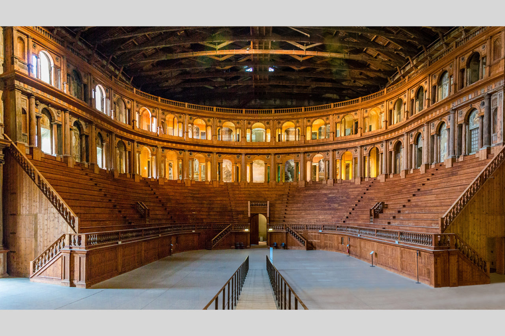
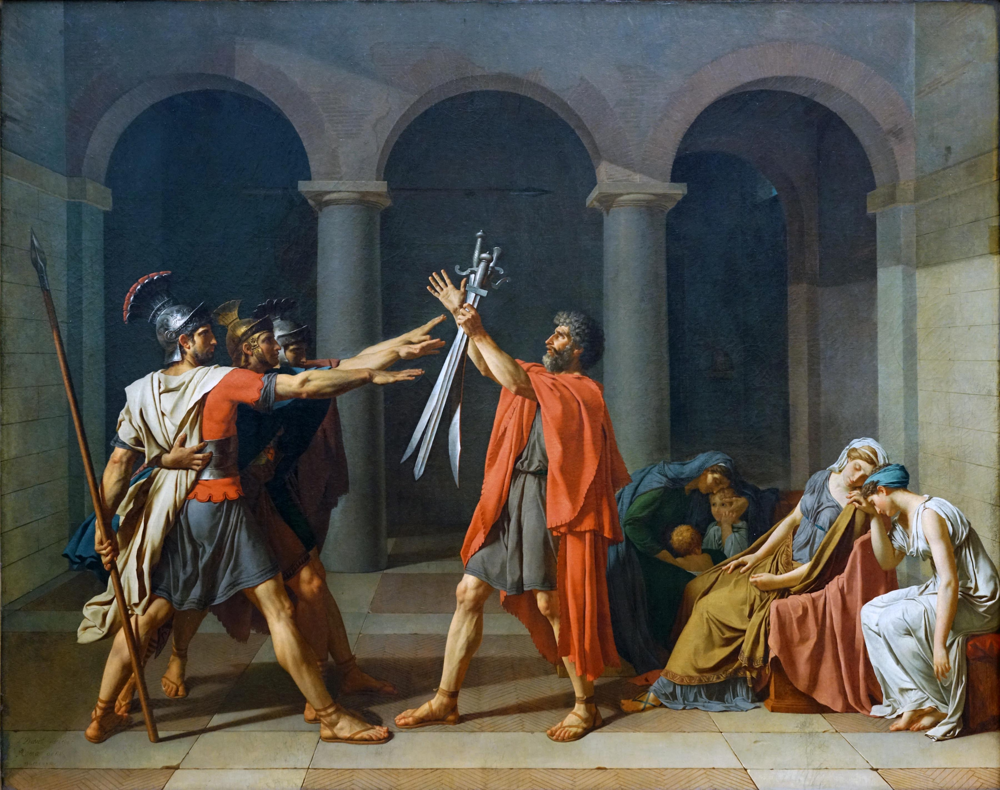
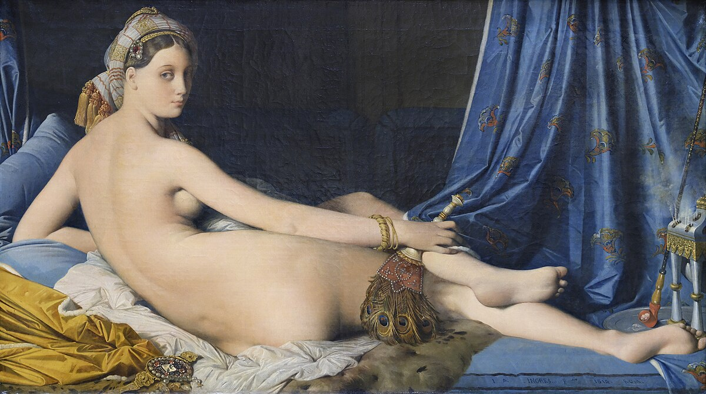

The aesthetics and ideals of ancient Greece and Rome served as the inspiration for the classical art movement. But these aren't the artistic creations of the actual Greek and Roman empires. This artwork was created later on in a comparable style.
Fundamentals of Classicism
Uphold the aesthetics of classical Greek and Roman art as the ideal
Includes theatre, architecture, and fine art.
Emphasizes harmony, clarity, restraint, universality and idealism
🎧 Listen to Classical Music to Enhance the Experience
Year
Event
1750
Early revival of Classical ideals begins.
1780–1815
High Neoclassicism — dominated by Jacques-Louis David.
1850
Movement declines as Romanticism takes over.
Classicism in Architecture
One of the most powerful manifestations of classicism was architecture. Greek temples and Roman public structures served as direct inspiration for the symmetry, columns, domes, and exact proportions used in building design.

The Pantheon — RomeThe British Museum — LondonThe White House — USA

La Madeleine - Paris
Classicism in Theatre
The "Three Unities"—one location, one time, and one main action—were stringent guidelines that classicist theatre adhered to. plays that emphasised morality, respect, and restrained emotion.
Unity of Time: story occurs within 24 hours
Unity of Place: one setting
Unity of Action: no side plots

Neoclassical Theatre Interior

French Classical Stage Design

Italian Classical Theatre Architecture
The interiors of neoclassical theaters are physically structured around the "Three Unities" of Classical theatrical performance; the designs' symmetry and placement of the central stage, balcony, and audience create a single, unified performance space (Unity of Place) while the geometric control and symmetry create a direct line of sight to the on-going action within the theater (Unity of Action). The proportionate and controlled nature of the neoclassical theater design requires that the action occur in real-time as well as on a continuous basis, which reflects the classical ideal of a dramatic moment in itself (Unity of Time). Thus, the spatial arrangement of the neoclassical theaters and how they allow for and form the basis of the storytelling structure which epitomizes Classicist narratives represents a blending of moderation and balance that characterize all Classicist style storytelling.
Featured Artworks
The Oath of the Horatii — Jacques-Louis David

Interpretation: The Painting Called "Ideal" Is Classicism Personified, David’s Use of A Geometric Shapes, Rigid Body Positioning, and Strong Horizontal and Vertical Lines, Demonstrate Classicism's Emphasis on The Neoclassical Valuations Of Friendship, Duty, and Rational Self Sacrifice.
Techniques: David Creates Tension by Using Chiaroscuro (Thin, Strong Light) and The Arches Behind The Piece Create a Stable Architectural Framework Based on Roman Design, Thus Enhancing The Morality of This Art Piece.
La Grande Odalisque — Jean-Auguste-Dominique Ingres

Interpretation: Some May Interpret The Work Of Ingres As Romanticism, However, The Figures He Created in His Paintings are Classical in Their Definition In Point Of View, By Using An Idealized Form, A Smooth Finish, and Mathematical Correctness To Create A Feeling Of Beauty Through Elegance Rather Than Real-World Representation, Ingres Also Elongated The Proportions Of His Figures To Produce An Elegant Effect.
Techniques: Using A Smooth and Clean Brush Finish, Ingres Used Precise Brushstrokes That Eliminated Any Visible Evidence of Brush Marks, Representing The Classical Ideal of Perfection and Effortless Beauty in Art And The Use of Balanced Restraint Creates An OverallSense Of Calmness In Ingres' Work.
Spotlight Artists
Jacques-Louis David
Jacques-Louis David, the premier figure of the Neoclassical movement and one of the most important painters of the late eighteenth-and early nineteenth centuries, embodied many ideals expressed during the French Revolution while concentrating on ideals of moral virtue, civic responsibility, and rational clarity. David's rejection of the emotional excesses of Rococo was replaced with sharp geometry, carefully arranged compositional elements, and austere concepts that were influenced by the Roman Empire. Just as David's works, such as The Oath of the Horatii and The Death of Socrates, helped establish how western European nations would see and appreciate heroism and public duty, so too did David help establish the visual language of Classicism.
Jean-Auguste-Dominique Ingres
Jean-Auguste-Dominique Ingres, a student of David, created a personal and polished style within the Classicism category. While David looked to create dramatic images relating to the politics of the day, Ingres aimed at painting non-political images filled with beauty, precision, and mathematical harmony. Ingres' portraits, including La Grande Odalisque, show evidence of elongation and an unusually smooth surface. Ingres emphasised the importance of elegance over anatomical accuracy in his works. He believed that drawing represented the basic element of Classical art and became known for producing meticulously controlled lines, which bridged the gap between Classicalism and later academic styles that influenced the generations that followed him.
Jacques-Louis DavidJean-Auguste-Dominique Ingres
Curator’s Note
This exhibit highlights the clarity and order that defined Classicism. Each piece was selected
to show how artists of the period honoured the past while shaping a new vision of beauty.